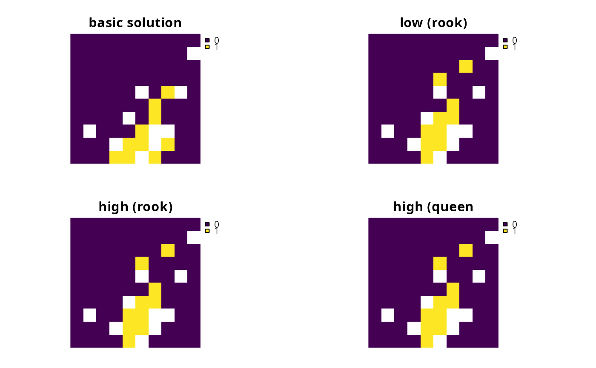
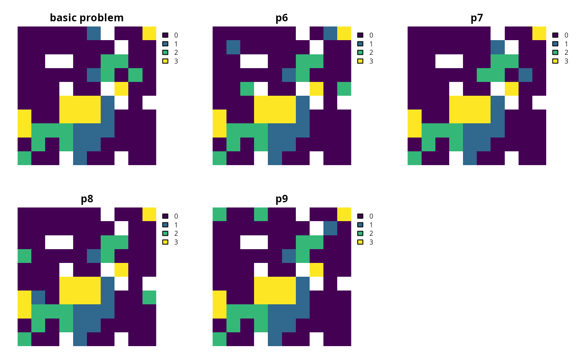

Add penalties to a conservation planning problem to penalize solutions that have few neighboring planning units. These penalties can be used to promote spatial clustering in solutions. In particular, they are recommended for reducing spatial fragmentation in large-scale problems or when using open source solvers.
Usage
# S4 method for class 'ConservationProblem,ANY,ANY,matrix'
add_neighbor_penalties(x, penalty, zones, data)
# S4 method for class 'ConservationProblem,ANY,ANY,data.frame'
add_neighbor_penalties(x, penalty, zones, data)
# S4 method for class 'ConservationProblem,ANY,ANY,ANY'
add_neighbor_penalties(x, penalty, zones, data)
# S4 method for class 'ConservationProblem,ANY,ANY,array'
add_neighbor_penalties(x, penalty, zones, data)Arguments
- x
problem()object.- penalty
numericpenalty that is used to scale the importance of selecting planning units with strong connectivity between them compared to the main problem objective (e.g., solution cost when the argument toxhas a minimum set objective set usingadd_min_set_objective()). Higherpenaltyvalues can be used to obtain solutions with a high degree of connectivity, and smallerpenaltyvalues can be used to obtain solutions with a small degree of connectivity. Note that negativepenaltyvalues can be used to obtain solutions that have very little connectivity.- zones
matrixorMatrixobject describing the neighborhood scheme for different zones. Each row and column corresponds to a different zone in the argument tox, and cell values must contain binarynumericvalues (i.e., one or zero) that indicate if neighboring planning units (as specified in the argument todata) should be considered neighbors if they are allocated to different zones. The cell values along the diagonal of the matrix indicate if planning units that are allocated to the same zone should be considered neighbors or not. The default argument tozonesis an identity matrix (i.e., a matrix with ones along the matrix diagonal and zeros elsewhere), so that planning units are only considered neighbors if they are both allocated to the same zone.- data
NULL,matrix,Matrix,data.frame, orarrayobject showing which planning units are neighbors with each other. The argument defaults toNULLwhich means that the neighborhood data is calculated automatically using theadjacency_matrix()function. See the Data format section for more information.
Value
An updated problem() object with the penalties added to it.
Details
This function adds penalties to conservation planning problem to penalize solutions that have low spatial clustering. Specifically, it favors pair-wise connections between planning units that have high connectivity values (based on Önal and Briers 2002).
Mathematical formulation
The neighbor penalties are implemented using the following equations.
Let \(I\) represent the set of planning units
(indexed by \(i\) or \(j\)), \(Z\) represent the set
of management zones (indexed by \(z\) or \(y\)), and \(X_{iz}\)
represent the decision variable for planning unit \(i\) for in zone
\(z\) (e.g., with binary
values one indicating if planning unit is allocated or not). Also, let
\(p\) represent the argument to penalty, \(D\) represent the
argument to data , and \(W\) represent the argument
to zones.
If the argument to data is supplied as a matrix or
Matrix object, then the penalties are calculated as:
$$ \sum_{i}^{I} \sum_{j}^{I} \sum_{z}^{Z} \sum_{y}^{Z} (-p \times X_{iz} \times X_{jy} \times D_{ij} \times W_{zy})$$
Otherwise, if the argument to data is supplied as a
data.frame or array object, then the penalties are
calculated as:
$$ \sum_{i}^{I} \sum_{j}^{I} \sum_{z}^{Z} \sum_{y}^{Z} (-p \times X_{iz} \times X_{jy} \times D_{ijzy})$$
Note that when the problem objective is to maximize some measure of benefit and not minimize some measure of cost, the term \(-p\) is replaced with \(p\).
Data format
The argument to data can be specified using the following formats:
dataas aNULLvalueneighborhood data should be calculated automatically using the
adjacency_matrix()function. This is the default argument. Note that the neighborhood data must be manually defined using one of the other formats below when the planning unit data in the argument toxis not spatially referenced (e.g., indata.frameornumericformat).dataas amatrix/Matrixobjectwhere rows and columns represent different planning units and the value of each cell indicates if the two planning units are neighbors or not. Cell values should be binary
numericvalues (i.e., one or zero). Cells that occur along the matrix diagonal have no effect on the solution at all because each planning unit cannot be a neighbor with itself.dataas adata.frameobjectcontaining columns that are named
"id1","id2", and"boundary". Here, each row denotes the connectivity between two planning units following the Marxan format. The"boundary"column should contain binarynumericvalues that indicate if the two planning units specified in the"id1"and"id2"columns are neighbors or not. This data can be used to describe symmetric or asymmetric relationships between planning units. By default, input data is assumed to be symmetric unless asymmetric data is also included (e.g., if data is present for planning units 2 and 3, then the same amount of connectivity is expected for planning units 3 and 2, unless connectivity data is also provided for planning units 3 and 2). If the argument toxcontains multiple zones, then the"zone1"and"zone2"columns can optionally be provided to manually specify if the neighborhood data pertain to specific zones. The"zone1"and"zone2"columns should contain thecharacternames of the zones. If the columns"zone1"and"zone2"are present, then the argument tozonesmust beNULL.dataas anarrayobjectcontaining four-dimensions where binary
numericvalues indicate if planning unit should be treated as being neighbors with every other planning unit when they are allocated to every combination of management zone. The first two dimensions (i.e., rows and columns) correspond to the planning units, and second two dimensions correspond to the management zones. For example, if the argument todatahad a value of 1 at the indexdata[1, 2, 3, 4]this would indicate that planning unit 1 and planning unit 2 should be treated as neighbors when they are allocated to zones 3 and 4 respectively.
References
Williams JC, ReVelle CS, and Levin SA (2005) Spatial attributes and reserve design models: A review. Environmental Modeling and Assessment, 10: 163–181.
See also
Other penalties:
add_asym_connectivity_penalties(),
add_boundary_penalties(),
add_connectivity_penalties(),
add_feature_weights(),
add_linear_penalties()
Examples
# \dontrun{
# load data
sim_pu_raster <- get_sim_pu_raster()
sim_features <- get_sim_features()
sim_zones_pu_raster <- get_sim_zones_pu_raster()
sim_zones_features <- get_sim_zones_features()
# create minimal problem
p1 <-
problem(sim_pu_raster, sim_features) %>%
add_min_set_objective() %>%
add_relative_targets(0.1) %>%
add_default_solver(verbose = FALSE)
# create problem with low neighbor penalties and
# using a rook-style neighborhood (the default neighborhood style)
p2 <- p1 %>% add_neighbor_penalties(0.001)
# create problem with high penalties
# using a rook-style neighborhood (the default neighborhood style)
p3 <- p1 %>% add_neighbor_penalties(0.01)
# create problem with high penalties and using a queen-style neighborhood
p4 <-
p1 %>%
add_neighbor_penalties(
0.01, data = adjacency_matrix(sim_pu_raster, directions = 8)
)
# solve problems
s1 <- terra::rast(list(solve(p1), solve(p2), solve(p3), solve(p4)))
names(s1) <- c("basic solution", "low (rook)", "high (rook)", "high (queen")
# plot solutions
plot(s1, axes = FALSE)

# create minimal problem with multiple zones
p5 <-
problem(sim_zones_pu_raster, sim_zones_features) %>%
add_min_set_objective() %>%
add_relative_targets(matrix(0.1, ncol = 3, nrow = 5)) %>%
add_default_solver(verbose = FALSE)
# create problem with low neighbor penalties, a rook style neighborhood,
# and planning units are only considered neighbors if they are allocated to
# the same zone
z6 <- diag(3)
print(z6)
#> [,1] [,2] [,3]
#> [1,] 1 0 0
#> [2,] 0 1 0
#> [3,] 0 0 1
p6 <- p5 %>% add_neighbor_penalties(0.001, zones = z6)
# create problem with high penalties and the same neighborhood as above
p7 <- p5 %>% add_neighbor_penalties(0.01, zones = z6)
# create problem with high neighborhood penalties, a queen-style
# neighborhood, neighboring planning units that are allocated to zones 1
# or 2 are treated as neighbors
z8 <- diag(3)
z8[1, 2] <- 1
z8[2, 1] <- 1
print(z8)
#> [,1] [,2] [,3]
#> [1,] 1 1 0
#> [2,] 1 1 0
#> [3,] 0 0 1
p8 <- p5 %>% add_neighbor_penalties(0.01, zones = z8)
# create problem with high neighborhood penalties, a queen-style
# neighborhood, and here we want to promote spatial fragmentation
# within each zone, so we use negative zone values.
z9 <- diag(3) * -1
print(z9)
#> [,1] [,2] [,3]
#> [1,] -1 0 0
#> [2,] 0 -1 0
#> [3,] 0 0 -1
p9 <- p5 %>% add_neighbor_penalties(0.01, zones = z9)
# solve problems
s2 <- list(p5, p6, p7, p8, p9)
s2 <- lapply(s2, solve)
s2 <- lapply(s2, category_layer)
s2 <- terra::rast(s2)
names(s2) <- c("basic problem", "p6", "p7", "p8", "p9")
# plot solutions
plot(s2, main = names(s2), axes = FALSE)

# }